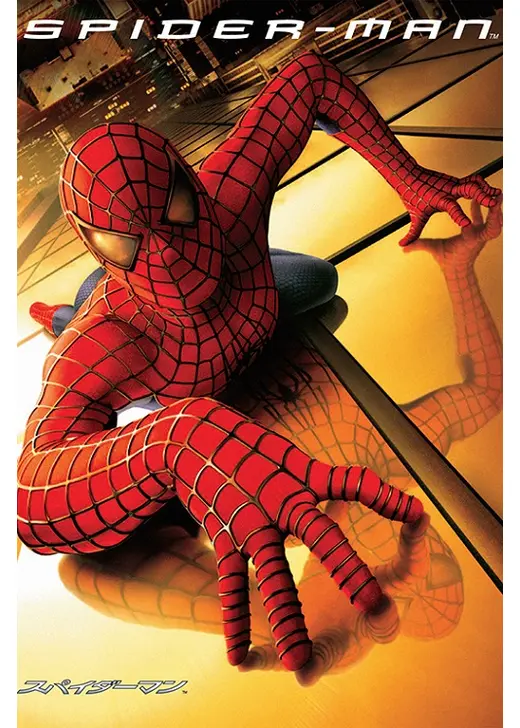
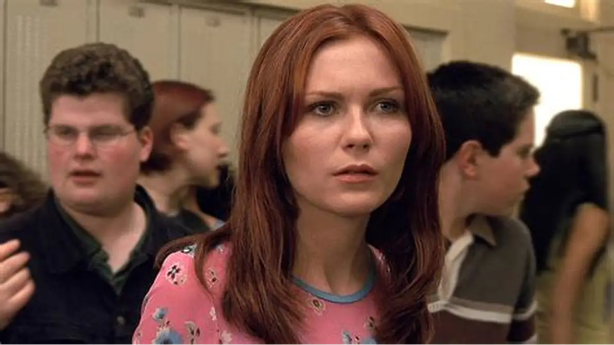

ピーター・パーカー / スパイダーマン
冴えない高校生 // 親愛なる隣人
見学先の見学ラボで遺伝子組み換えの蜘蛛（スーパースパイダー）に噛まれたことで、メガネが必要なくなり、超人的な身体能力、壁に張り付く力、危機を察知する「スパイダーセンス」を手に入れる。最愛のベンおじさんの死をキッカケに、正義のヒーローとして生きる誓いを立てる。
「大いなる力には、大いなる責任が伴う。これが僕の運命だ。僕が誰かって？……親愛なる隣人、スパイダーマンさ。」

メリー・ジェーン・ワトソン (MJ)
ピーターの幼馴染 // 女優を夢見るヒロイン
ピーターが幼い頃からずっと片想いをしている隣の家の女の子。女優になる夢を追いかけながら不遇な現実に葛藤している。危機を何度も救ってくれたミステリアスなヒーロー「スパイダーマン」に惹かれ、あの伝説の「逆さキス」を交わす。
「ねえ、スパイダーマンに伝えて。……私を助けてくれたお礼を、まだちゃんと言ってないって。」
ハリー・オズボーン
ピーターの親友 // オズコープ社の御曹司
巨大軍需企業オズコープ社の社長ノーマン・オズボーンの息子であり、ピーターの唯一無二の親友。偉大すぎる父親からの重圧に常に苦悩しており、次第にMJを巡ってピーターとの関係や、スパイダーマンへの複雑な愛憎に巻き込まれていく。
「ピーター、お前は俺の最高の兄弟だ。……でも、親父はいつもお前のことばかり褒めるんだ。」
ノーマン・オズボーン / グリーン・ゴブリン
オズコープ社社長 // 狂気の緑の悪魔
軍との契約を急ぐあまり、未完成の身体能力増強薬を自らに投与。その副作用で邪悪な別人格「グリーン・ゴブリン」が誕生してしまう。最新鋭の飛行ボード（グライダー）とパンプキンボムを武器に、自分を裏切った取締役たち、そしてスパイダーマンを執拗に追い詰める。
「スパイダーマン、お前と私は似ている。……ヒーローでいることに疲れたら、私と共に街を支配しようじゃないか！」